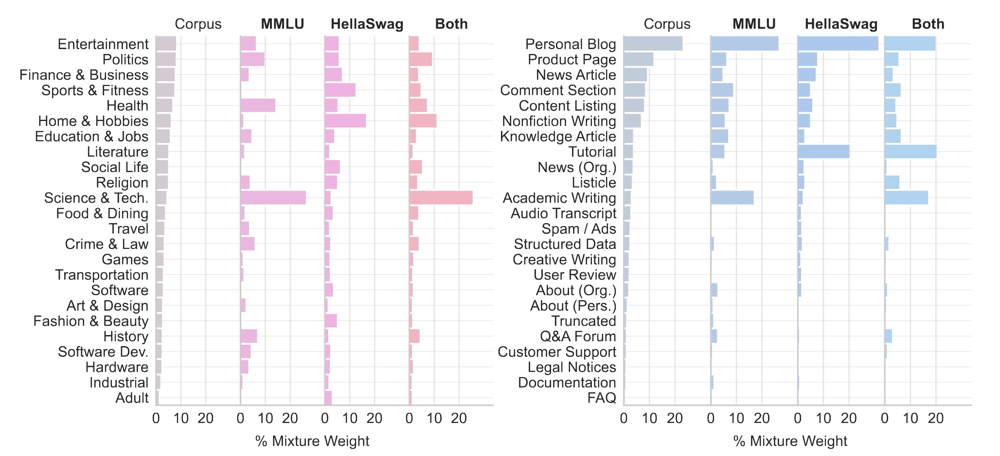
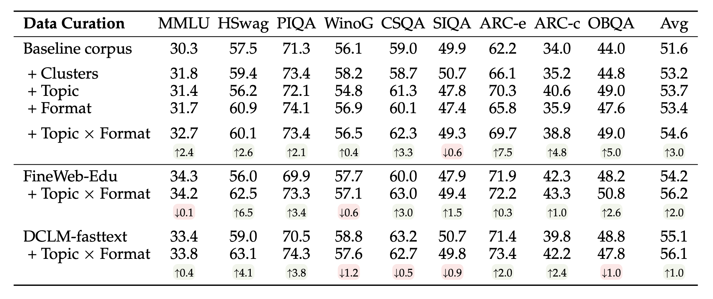
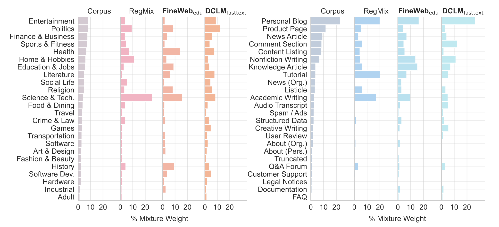

Motivation
Modern language models are trained on large, unstructured datasets consisting of trillions of tokens and obtained from crawling the web.
We introduce WebOrganizer, a framework that organizes this vast amount of information into meaningful topic and format domains.
These domains expose the internal composition of monolithic web corpora and we also demonstrate that they are useful for curating better pre-training data for language models.
Takeaways
Better Data Mixing: Constructing domains has the advantage that we can systematically study the importance of each subset. We adapt the RegMix framework for learning which domains are most useful for improving performance on MMLU and HellaSwag.

Our optimized domain mixtures improve downstream performance over the default proportions of the corpus across a range of tasks, and topics and formats mixing can be combined to further improve performance.

Complementary to Quality Filters:
Data curation with domains and quality filters have complimentary strengths - quality filtering can discard individual documents, while domain mixing can be finely calibrated towards downstream needs. Using them both together achieves the strongest perfomrance overall.

Understanding Data Curation: Our framework also provides insights into existing data curation practices. We consider how quality filters will implicitly change the domain distributions, and observe both similarities and differences in the domain preferences of two quality filters, FineWeb-edu and DCLM-fasttext.
We study how much we can approximate the performance of quality filters from their implicit domain mixtures. While their domain mixtures perform better than the default corpus proportions, there remains a gap in performance, suggesting that fine-grained quality filtering also contributes to the performance.